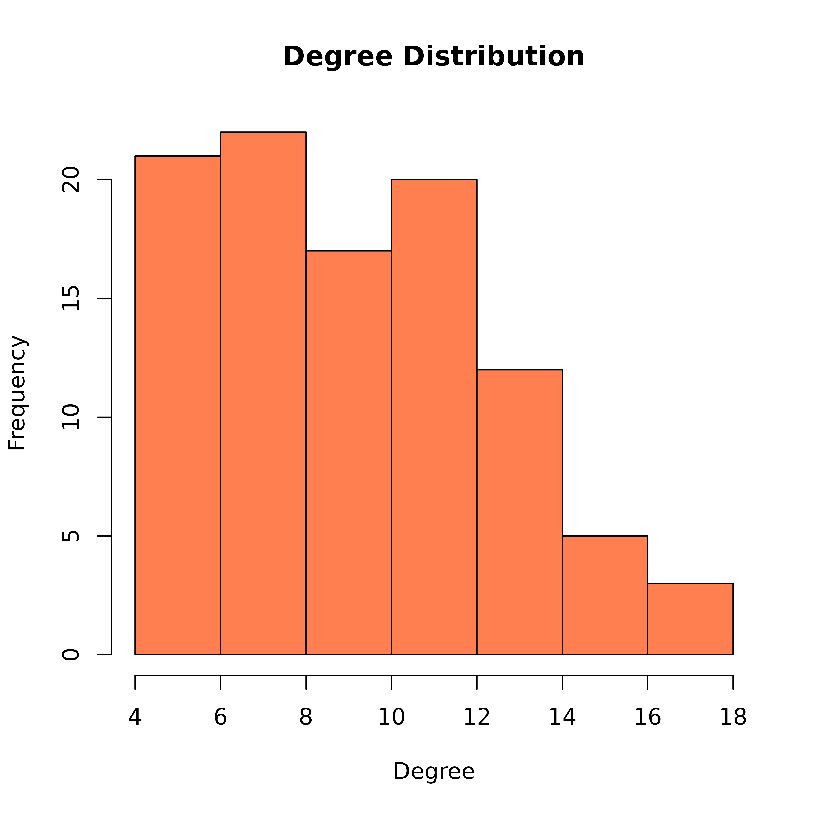

Creates a histogram showing the degree distribution of a network. Useful for understanding the connectivity patterns and identifying whether a network follows particular degree distributions (e.g., power-law, normal).
Usage
degree_distribution(
x,
mode = "all",
directed = NULL,
loops = TRUE,
simplify = "sum",
cumulative = FALSE,
main = "Degree Distribution",
xlab = "Degree",
ylab = "Frequency",
col = "steelblue",
...
)Arguments
- x
Network input: matrix, igraph, network, cograph_network, or tna object
- mode
For directed networks: "all", "in", or "out". Default "all".
- directed
Logical or NULL. If NULL (default), auto-detect from matrix symmetry. Set TRUE to force directed, FALSE to force undirected.
- loops
Logical. If TRUE (default), keep self-loops. Set FALSE to remove them.
- simplify
How to combine multiple edges between the same node pair. Options: "sum" (default), "mean", "max", "min", or FALSE/"none" to keep multiple edges.
- cumulative
Logical. If TRUE, show cumulative distribution instead of frequency distribution. Default FALSE.
- main
Character. Plot title. Default "Degree Distribution".
- xlab
Character. X-axis label. Default "Degree".
- ylab
Character. Y-axis label. Default "Frequency" (or "Cumulative Frequency" if cumulative = TRUE).
- col
Character. Bar fill color. Default "steelblue".
- ...
Additional arguments passed to
hist.
Value
Invisibly returns the histogram object from graphics::hist().
Examples
# Basic usage
adj <- matrix(c(0, 1, 1, 0,
1, 0, 1, 1,
1, 1, 0, 1,
0, 1, 1, 0), 4, 4, byrow = TRUE)
cograph::degree_distribution(adj)
 # Cumulative distribution
cograph::degree_distribution(adj, cumulative = TRUE)
# Cumulative distribution
cograph::degree_distribution(adj, cumulative = TRUE)
 # For directed networks
directed_adj <- matrix(c(0, 1, 0, 0,
0, 0, 1, 0,
1, 0, 0, 1,
0, 1, 0, 0), 4, 4, byrow = TRUE)
cograph::degree_distribution(directed_adj, mode = "in",
main = "In-Degree Distribution")
# For directed networks
directed_adj <- matrix(c(0, 1, 0, 0,
0, 0, 1, 0,
1, 0, 0, 1,
0, 1, 0, 0), 4, 4, byrow = TRUE)
cograph::degree_distribution(directed_adj, mode = "in",
main = "In-Degree Distribution")
 # With igraph
if (requireNamespace("igraph", quietly = TRUE)) {
g <- igraph::erdos.renyi.game(100, 0.1)
cograph::degree_distribution(g, col = "coral")
}
#> Warning: `erdos.renyi.game()` was deprecated in igraph 0.8.0.
#> ℹ Please use `sample_gnp()` instead.
# With igraph
if (requireNamespace("igraph", quietly = TRUE)) {
g <- igraph::erdos.renyi.game(100, 0.1)
cograph::degree_distribution(g, col = "coral")
}
#> Warning: `erdos.renyi.game()` was deprecated in igraph 0.8.0.
#> ℹ Please use `sample_gnp()` instead.
